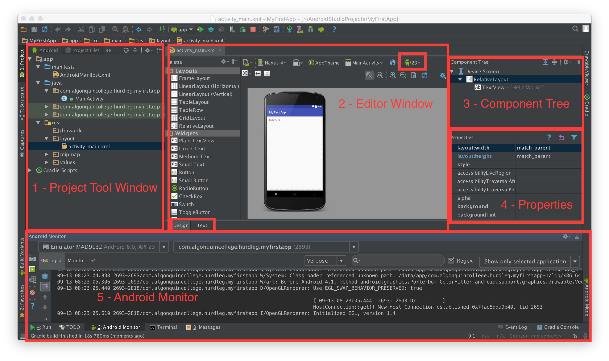

Android Studio is the official Integrated Development Environment (IDE) for Android app development, based on IntelliJ IDEA
Android Studio offers many features that enhance your productivity when building Android apps, such as:
The Android Studio main window is made up of several logical areas.

Each project in Android Studio contains one or more modules with source code files and resources files. Types of modules include:
By default, Android Studio displays your project files in the Android project view (see above screenshot). This view is organized by modules to provide quick access to your project's key source files.
All the build files are visible at the top level under Gradle Scripts and each app module contains the following folders:
AndroidManifest.xml file.The Android project structure on disk differs from this flattened representation. To see the actual file structure of the project, select Projectfrom the Project dropdown (it's showing as Android).
For more information, see Managing Projects
The editor window is where you create and modify code. Depending on the current file type, this window can change. For example, when view a layout file (activity_main.xml in the screenshot), the editor window displays the layout editor and offers the option to view the corresponding XML file.
From the screenshot, notice the API is set to 23, and I'm currently in Design view (WYSIWYG).
Displays how the Android Views and ViewGroups are organized.
From the screenshot, the app is using a RelativeLayout. The layout has one child View: a TextView with the literal String "Hello World!".
Displays the properties for the selected Android View or ViewGroup.
From the screenshot, the properties for the RelativeLayout (selected in the Component Tree) are being displayed. Notice the width and height of the RelativeLayout match the parent. From the Component Tree, the Device Screen is the parent.
Android Monitor helps you to profile the performance of your apps so you can optimize, debug, and improve them. It lets you monitor the following aspects of your apps from a hardware device or the Android Emulator:
Android Monitor provides various tools that provide real-time information about your app. It lets you capture data as your app runs and stores in a file that you can analyze in various viewers. You can also capture screenshots and videos of your app as it runs.
For more information, see Android Monitor Overview